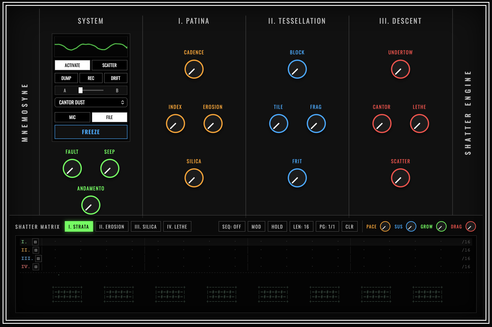

IV. MNEMOSYNE
"Memory is never retrieved whole; it is a ruin reconstructed from shattered pieces."
A live-capture rhythmic micro-slicer and morphological mosaic environment, designed to cast suspended audio in mortar, fracture it into interlocking tessellations, and bleed them into suffocating decay. Mnemosyne tears a single breath of audio from the room and casts it in mortar. The architecture is immediately subjected to fault lines, temporal decay, and violent dropouts. What remains is a destructive mosaic—asynchronous strata and morphological lanes forcing the frozen trace into shifting ruins. Ghosts wake up in the undercurrent. It is the act of building a heavy, ancient temple from the broken glass of the immediate past.

SYSTEM & OLED (Capture, State & Sabotage)
Activate / Scope (Seismograph Toggle)
Initializes the audio engine and switches the OLED display between live waveform trace and peak seismograph history.
Freeze (Trace Toggle)
The performance catalyst; halts buffer overwrite to trap a live 2-second block of incoming or routed audio as structural raw material.
Mic / File / Rec / Dump / Drift / A–B
Routes live microphone or audio files into the capture buffer, records stereo WAV output, saves randomized state presets, applies subtle parameter drift, and morphs between A and B snapshots.
Fault
Actively sabotages structural regularity, shifting harmonic ratios or fracturing windows with probabilistic dropouts and silence.
Seep
Introduces phase drift across heads, cross-choking between layers, stutter gating, and high-threshold feedback flooding.
Andamento
Governs the base cycling rate of the four playhead subdivisions across the captured buffer.
I. PATINA (Time & Weathering)
Cadence
Scales tape-speed / read-window rate around a 1:1 center reference, stretching or compressing the temporal grain of the buffer.
Index
Shifts the read-head scan offset across the 2-second memory buffer, moving between strata of the captured sound.
Erosion
Morphs head envelopes between step-cut gates and curved sinusoidal windows, wearing down sharp edges into eroded swells.
Silica
Subjects the signal to sample-rate decimation and wavefolding, turning smooth strata into brittle, crystalline grit.
II. TESSELLATION (Mosaic Subdivisions)
Block, Tile, Frag (Fragment), & Frit
Four interlocking voice heads reading staggered offsets of the shared memory buffer. Each head shapes a distinct subdivision tier and density so a single static buffer yields shifting polyrhythmic architecture without pitch dissonance.
III. DESCENT (Undercurrent & Abyss)
Undertow
Reads backward through the buffer beneath the main mosaic, pulling a heavy reversed undercurrent into the mix.
Cantor
Introduces a tunable, folded sub-oscillator and upper eidolon voice that melt and cross-modulate against the mosaic core.
Lethe
Feeds the signal into a dual-tap, high-pass-filtered low-pass Bucket Brigade delay tank, blurring fractured slices into a dark, wheezing abyss.
Scatter
Scatters probability-gated micro-slices across the stereo field, snapping toward a 5/16 Euclidean lock at high settings.
SHATTER MATRIX (Morphological Sequencer & Canopy)
I. Strata / II. Erosion / III. Silica / IV. Lethe (Lanes)
Four morphological injection lanes rather than drum triggers. Each lane injects state movement into its corresponding domain—shifting buffer slice offsets, eroding windows and dropouts, folding high-frequency grit, or swelling the BBD/undertow cloud—while color-polluting and morphing the eight ASCII blocks below.
Seq / Mod / Hold / Len / Pg / Clr & Lane Dice (⚄)
SEQ toggles sequencer interaction against free-running playheads; MOD locks or clears per-step dial values; HOLD latches sustained states across steps; LEN and PG adjust lane length (1–64) and 16-step view pages; CLR clears lane steps or locks; each lane's ⚄ button rolls fresh morphological steps (or random MOD locks when MOD is active).
Pace / Sus / Grow / Drag
PACE sets sequencer step rate from slow macro-drift to fast clock; SUS lengthens cloud release tails; GROW mutates steps and seeps parameter locks across loop cycles; DRAG slews morphological transitions without scrubbing slice pitch.